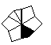

Step 1: Get into Barrel-Barrel. This can always be done in 6 or fewer slices. A basic method to do this step is to get all 8 edges next to each other, then do / U2 D4 /.

 →
→ 
| Name | Image | Algorithm | Comments |
|---|---|---|---|
| Solved |  |
N/A | 2.86% skip chance. |
| Left Feet |   |
/ U' / U' / D | 11.43% probability. |
| Right Feet |   |
/ U / U / D | 11.43% probability. Mirror of Left Feet. |
| Opp. Feet |  |
/ U5' / D | 22.86% probability - the most common case. |
| Left Crowbar |   |
/ U / U' / U | 5.71% probability. |
| Right Crowbar |  |
/ U' / U / U | 5.71% probability. Mirror of Left Crowbar. |
| Matching Blocks |   |
/ U' D' / U | 2.86% probability. Can be performed from any angle. |
| Blocolumns |  |
/ U' / U5 D / U | 11.43% probability. |
| Opp. Blocks |  |
/ U' / U' D' / U | 5.71% probability. Obvious slice into Matching Blocks. |
| Left Lock |  |
/ U / D5' / U | 5.71% probability. Simple slice into Opp. Feet. |
| Right Lock | |
/ U' / D5 / U | 5.71% probability. Mirror of Left Lock. |
| Columns |  |
/ U / U' D' / U | 5.71% probability. Slice into Matching Blocks. |
| Antipode |  |
/ U D / U / U' D' / U | 2.86% probability. Slice into Columns. |
Step 3: Corner-Edge Pairs: All 8 edges need to be paired with their respective corner.
- Pair 3 edges on the bottom layer: Intuitive.
- Pair remaining 5 edges using a series of swaps. Only the first algorithm is necessary to solve any L5P case. The notation is different here: since 30-degree turns are impossible, a 60-degree turn is U/D.
| Case (1 = UFL, 2 = UL...) | Algorithm |
|---|---|
| 10 ⟷ 4 | / U / D / U' / U2 / D' / D / U2' D' |
| 4 ⟷ 5 | U2' / U / D' / U2' / U' / U2' / U2' / U' D / |
| 10 → 6 → 2 → 10; 1 ⟷ 3 | / U2' / U2 / U2 |
| 1 ⟷ 2; 10 ⟷ 4 | / U' / U' / U / U |
| 10 → 3 → 4 → 10 | / D' / U / U' / D |